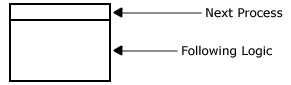
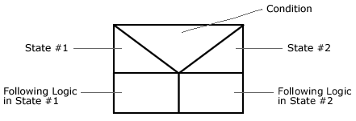
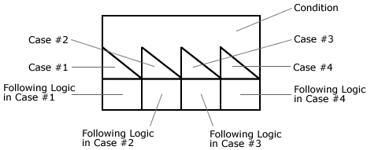
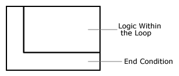
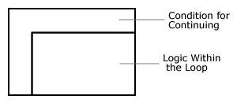

Home >> Nassi-Shneiderman Charts
Nassi-Shneiderman Charts
These charts are used to describe detail logic. They are excellent for small complex algorithms but require too much area (paper space) when the algorithm is large.
Sequence

Condition (2 state)

Condition (case)

Do-until Loop

Do-while Loop

Back to top